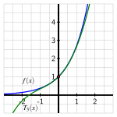
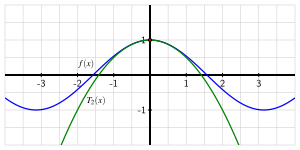

How are the coefficients of the polynomial approximation to a function \(f(x)\) near \(a = 0\) determined by the values of the various derivatives of \(f\text{,}\) evaluated at \(a = 0\text{?}\)
In Activity 8.1.3, we used \(f(x) = e^x\) as a case study to investigate polynomial approximations to \(f(x)\) near near \(a = 0\text{.}\) For the degree \(3\) case, we chose the conditions \(T_3(0) = f(0)\text{,}\)\(T_3'(0) = f'(0)\text{,}\)\(T_3''(0) = f''(0)\text{,}\) and \(T_3'''(0) = f'''(0)\text{.}\) Starting with \(T_3(x) = c_0 + c_1 x + c_2 x^2 + c_3 x^3\) and \(f(x) = e^x\text{,}\) we found the first three derivatives of \(f\) and \(T_3\) and evaluated them at \(a = 0\text{,}\) which led to the results in Table 8.2.1.
Table8.2.1.Formulas and values for \(f(x) = e^x\) and \(T_3(x) = c_0 + c_1 x + c_2 x^2 + c_3 x^3\) and their derivatives.
Moreover, plotting \(f\) and \(T_3\) near \(a = 0\text{,}\) we see in Figure 8.2.2 that the interval of accuracy for a tolerance of \(0.1\) is about \(-1.2 \le x \le 1.2\text{.}\)

Figure8.2.2.The function \(f(x)=e^x\) and its degree \(3\) Taylor approximation \(T_3(x) = 1 + x + \frac{1}{2}x^2 + \frac{1}{6}x^3\) near the point \((0,f(0))\text{.}\)
One important pattern we observed in our work with \(f(x) = e^x\) is that \(f^{(n)}(0) = 1\) for every natural number \(n\text{.}\) As we will see, this information will ultimately help us find a general formula for \(c_n\text{,}\) the coefficient of \(x^n\) in the general degree \(n\) polynomial approximation of \(f(x) = e^x\text{.}\)
In this section, we will learn how we can more systematically find degree \(n\) approximations for functions that have at least \(n\) derivatives, as well as how to center the approximation at a value other than \(a = 0\text{.}\)
Let \(f(x) = \sin(x)\) and \(T_3(x) = c_0 + c_1 x + c_2 x^2 + c_3x^3\text{.}\) We want to find the values of \(c_0, \ldots, c_3\) that make the sine function and its derivative values agree with those of the cubic polynomial \(T_3\) at \(a = 0\) and see how the resulting degree \(3\) approximation of the sine function compares to the tangent line approximation.
Compute the first three derivatives of \(f(x) = \sin(x)\) and evaluate them at \(a = 0\) accordingly, recording your results in the blanks provided below.
Now, set \(T_3(0) = f(0)\text{,}\)\(T_3'(0) = f'(0)\text{,}\)\(T_3''(0) = f''(0)\text{,}\) and \(T_3'''(0) = f'''(0)\text{.}\) What are the resulting values of \(c_0, \ldots, c_3\text{?}\) What is the resulting formula for \(T_3(x)\text{?}\)
Recall that the tangent line approximation \(T_1\) to \(f(x) = \sin(x)\) at \(a = 0\) is \(T_1(x) = x\text{.}\) Use appropriate computer technology to plot the cubic approximation \(T_3(x)\) you found in (b) along with \(f(x)\) and \(T_1(x)\) in the same window shown in Figure 8.2.3.
What do you observe about the approximation of \(f(x)\) by \(T_3(x)\) compared to the approximation of \(f(x)\) by \(T_1(x)\text{?}\) For example, how do \(f(1) - T_1(1)\) and \(f(1) - T_3(1)\) compare?
In our work so far, we’ve seen that raising the degree of polynomial improves the approximation of the original function \(f(x)\text{.}\) If we decided we wanted to find a degree \(9\) approximation to \(f(x) = \sin(x)\text{,}\) we’d need to find a polynomial whose value and first \(9\) derivatives match those of the sine function at \(a = 0\text{.}\)
In our work so far in Chapter 8, we have found several different approximations of two important functions: \(e^x\) and \(\sin(x)\text{.}\) In Section 8.1, we saw that near \(a = 0\)
\(e^x \approx 1 + x\) (the degree \(1\) approximation);
We’ve also observed that as the degree of the approximation increases, the polynomial approximation gets more accurate by being closer to the original function \(f(x)\) at each fixed value of \(x\) as well as on a wider interval. To find better and better approximations of any function with a sufficient number of derivatives, we naturally want to find approximations of arbitrary degree \(n\text{.}\) We thus define the Taylor polynomial of degree \(n\) centered at \(a = 0\).
Let \(n\) be a natural number and let \(f\) be a function with at least \(n\) derivatives at \(a = 0\text{.}\) The degree \(n\) Taylor polynomial of \(f\) centered at \(a = 0\) is the function
By definition, \(T_n\) is the polynomial whose function and first \(n\) derivative values at \(a = 0\) match the function value and all \(n\) derivative values of \(f\) at \(a = 0\text{.}\)
enable us to determine the coefficients \(c_0, c_1, \ldots, c_n\) in terms of the values of the various derivatives of \(f\text{.}\) First, we take \(n\) derivatives of \(T_n(x)\text{,}\) and assemble those in Table 8.2.5. As we do so, we choose not to combine products of numbers that arise in order to see certain patterns in the coefficients.
Next, we evaluate each of the derivatives of \(T_n(x)\) at \(a = 0\text{,}\) and then set the result equal to the corresponding derivative value of \(f\) evaluated at \(a = 0\text{,}\) which ultimately enables us to determine the coefficients \(c_0, c_1, \ldots, c_n\text{.}\) These two steps are summarized in Table 8.2.6. Note particularly how we use the index variable, \(k\text{,}\) to track the various derivatives of \(T_n\) and \(f\text{.}\)
We see a natural pattern that results from taking the \(k\)th derivative of the \(k\)th power of \(x\text{,}\)\(x^k\text{.}\) For example, the repeated derivatives of \(x^4\) are \(4x^3\text{,}\)\((4 \cdot 3) x^2\text{,}\)\((4 \cdot 3 \cdot 2) x\text{,}\) and finally \(4 \cdot 3 \cdot 2 \cdot 1\text{.}\) By the time we get to the fourth derivative of \(x^4\text{,}\) only a constant remains, and that constant is the factorial 1 
For any positive whole number \(n\text{,}\) its factorial, \(n!\text{,}\) is the product of all of the positive whole numbers less than or equal to \(n\text{:}\)\(n! = n \cdot (n-1) \cdot (n-2) \cdot \cdots \cdot 3 \cdot 2 \cdot 1\text{.}\)
From the rightmost column of Table 8.2.6, we now see how the values of \(c_0, c_1, \ldots, c_n\) are determined by the values of the various derivatives evaluated at \(a = 0\text{,}\) each scaled by a corresponding factorial. In particular, solving each equation in the rightmost column of Table 8.2.6 for \(c_k\text{,}\) we see that
This enables us to find the degree \(n\) Taylor polynomial for any function \(f\) by finding the values of \(f(0), f'(0), f''(0), \ldots, f^{(n)}(0)\) and using these numbers to determine \(c_0, c_1, c_2, \ldots, c_n\text{.}\) We summarize our recent work as follows.
Finding the degree \(n\) Taylor polynomial of \(f\) centered at \(a = 0\).
If \(f\) is a function with at least \(n\) derivatives at \(a = 0\text{,}\) then the degree \(n\) Taylor polynomial of \(f\) centered at \(a = 0\text{,}\)\(T_n(x)\text{,}\) is
To find the degree \(5\) Taylor polynomial, we need to compute \(f(0)\text{,}\)\(f'(0)\text{,}\)\(f''(0)\text{,}\)\(\ldots\text{,}\)\(f^{(5)}(0)\text{,}\) so we first find the first through fifth derivatives of \(f\) in the left column of Table 8.2.8, and then evaluate those derivatives at \(a = 0\) in the right column.
When finding the coefficients of a Taylor polynomial, it is often helpful to not combine products such as \((-3)(-2)(-1)\) and \((-4)(-3)(-2)(-1)\) into a single number, in order to better observe patterns; indeed, by not combining the constants that arise in higher derivatives of \(f(x) = \ln(1+x)\text{,}\) we see patterns of alternating signs and factorials that arise. From the last six rows of Table 8.2.8 and the fact that \(c_k = \frac{f^{(k)}(0)}{k!}\text{,}\) we find that
and by plotting \(T_5(x)\) along with \(f(x)\) and \(T_1(x)\) in Figure 8.2.9, we see how much better the degree \(5\) approximation is than the tangent line approximation.
Figure8.2.9.The function \(f(x)=\ln(1+x)\) and its degree \(5\) Taylor approximation \(T_5(x) = x - \frac{1}{2}x^2 + \frac{1}{3}x^3 - \frac{1}{4}x^4 + \frac{1}{5}x^5\) near the point \((0,f(0))\text{,}\) along with \(T_1(x) = x\text{.}\)
From our work in Example 8.2.7, we see the pattern that arises in the various derivatives of \(f(x) = \ln(1+x)\text{.}\) We therefore find that the general degree \(n\) Taylor polynomial centered at \(a = 0\) for \(f(x) = \ln(1+x)\) is
Let \(f(x) = \cos(x)\text{.}\) Through the questions that follow, we seek to find the degree \(n\) Taylor polynomial for \(f(x)\) centered at \(a = 0\text{.}\)
Determine the first \(8\) derivatives of \(f(x) = \cos(x)\) and evaluate each at \(a = 0\text{.}\) Summarize your work by filling in all the blanks below.
Use your work in (a) along with the fact that the coefficients of the Taylor polynomial are determined by \(c_k = \frac{f^{(k)}(0)}{k!}\) to find \(T_8(x)\text{.}\)
Use appropriate computing technology to plot \(T_4(x)\) and \(T_6(x)\) along with \(f(x) = \cos(x)\) and \(T_2(x)\) in the same window as shown in Figure 8.2.10.

Figure8.2.10.The function \(f(x)=\cos(x)\) and its degree \(2\) Taylor approximation \(T_2(x) = 1 - \frac{1}{2}x^2\) near the point \((0,f(0))\text{.}\)
Build a spreadsheet similar to the one in Table 8.1.11 and Table 8.1.12 from Activity 8.1.4, but do so using \(\Delta x = 0.2\text{,}\) a start value of \(x = -2\text{,}\) and the functions \(f(x) = \cos(x)\text{,}\)\(T_2(x)\text{,}\)\(T_4(x)\text{,}\) and \(T_6(x)\text{.}\) The first six columns of your spreadsheet should begin as shown in Table 8.2.11,
Table8.2.11.Comparing \(f(x) = \cos(x)\) and its degree \(2\text{,}\)\(4\text{,}\) and \(6\) approximations near \(a = 0\text{.}\)
For approximately what interval of \(x\)-values is it true that \(|f(x) - T_2(x)| \lt 0.1\text{?}\) How does the interval of \(x\)-values change if we instead consider where \(|f(x) - T_4(x)| \lt 0.1\text{?}\) how about where \(|f(x) - T_6(x)| \lt 0.1\text{?}\)
Our work so far with the functions \(e^x\text{,}\)\(\sin(x)\text{,}\)\(\cos(x)\text{,}\) and \(\ln(1+x)\) has revealed patterns in their derivatives that enable us to find even higher degree Taylor polynomials easily. Furthermore, these higher degree polynomials provide outstanding approximations that only require the use of addition and multiplication.
The pattern of alternating signs and even numbers in the factorials and powers of \(x\) lets us see that we could easily write down, say, \(T_{20}(x)\text{.}\) We can reason similarly to extend what we found in Preview Activity 8.2.1 and observe that
When we ask a computational device to find numerical estimates for quantities such as \(e^2\text{,}\)\(\sin(1)\text{,}\) and \(\cos(1.2)\text{,}\) high degree Taylor polynomials are used to generate the results. For example,
which is a remarkably accurate estimate of \(\sin(1) = 0.84147098 \ldots\text{,}\) given that the estimate only involves the sum of four rational numbers.
Subsection8.2.2Taylor polynomial approximations centered at an arbitrary value \(a\)
In all of our work so far in Chapter 8, we have focused on approximating functions such as \(e^x\text{,}\)\(\sin(x)\text{,}\)\(\ln(1+x)\text{,}\) and \(\cos(x)\) near \(a = 0\text{.}\) But we could instead be interested in the behavior of some function \(f\) near \(a = 5\text{,}\) or be interested in a function \(f\) that wasn’t even defined at \(a = 0\text{.}\) Thus, we next generalize our earlier work to Taylor polynomial approximations centered at any value \(a\text{.}\)
From our early studies in Section 1.8, we know that at any input value \(x = a\) where a function \(f\) has a first derivative, \(f\) has a tangent line approximation
that satisfies \(f(x) \approx L(x)\) for \(x\) values near \(a\text{.}\) Provided that \(f\) has a second derivative at \(x=a\text{,}\) we can build a quadratic approximation near \(a\) for \(f\text{,}\) similar to the one we found at \(a = 0\) for \(f(x)=e^x\) in Activity 8.1.3. In addition, as long as \(f\) has a third derivative at \(x=a\text{,}\) we can even find a cubic approximation (just as we did at \(a = 0\) in Activity 8.1.4), and so on.
In developing such approximations centered at any value \(x = a\text{,}\) our guiding principle is the same as with our work at \(a = 0\text{:}\) we’ll require that at the input value \(a\text{,}\) the original function’s output and its derivatives’ outputs match the corresponding approximation’s output and derivatives’ output.
Let \(n\) be a natural number and let \(f\) be a function with at least \(n\) derivatives at \(a\text{.}\) The degree \(n\) Taylor polynomial of \(f\) centered at \(a\) is the function
Similar to the situation when \(a = 0\text{,}\) it follows that we can find the coefficients \(c_k\) of the Taylor polynomial in terms of the various derivatives of \(f\) evaluated at \(a\text{.}\)
Finding the degree \(n\) Taylor polynomial of \(f\) centered at \(a\).
If \(f\) is a function with at least \(n\) derivatives at \(a\text{,}\) then the degree \(n\) Taylor polynomial of \(f\) centered at \(a\text{,}\)\(T_n(x)\text{,}\) is
As with approximations centered at \(a = 0\text{,}\) the Taylor polynomial now provides us with an approximation of \(f\) near \(a\text{.}\) In particular,
Let \(f(x) = \ln(x)\text{,}\) and recall that \(f\) is only defined for \(x \gt 0\text{.}\) As such, we can’t consider the tangent line (or any other) approximation at \(a = 0\text{.}\) Instead, we choose to work with an approximation to \(f(x) = \ln(x)\) centered at \(a = 1\) and will find the degree \(4\) Taylor polynomial approximation
Determine \(f'(x)\text{,}\)\(f''(x)\text{,}\)\(f'''(x)\text{,}\) and \(f^{(4)}(x)\text{,}\) and then compute \(f'(1)\text{,}\)\(f''(1)\text{,}\)\(f'''(1)\text{,}\) and \(f^{(4)}(1)\text{.}\) Enter your results in the provided blanks below.
Use appropriate technology to plot we see \(f(x) = \ln(x)\text{,}\) its tangent line, \(T_1(x) = x - 1\text{,}\) and \(T_4(x)\) in the same window shown in Figure 8.2.22.
Figure8.2.22.The function \(f(x)=\ln(x)\) and its degree \(1\) Taylor approximation \(T_1(x) = x-1\) near the point \((1,f(1))\text{.}\)
Compute \(|f(x) - T_4(x)|\) for several different \(x\) values (you might find it helpful to use a slider in Desmos in the variable \(b\) to experiment with \(|f(b) - T_4(b)|\)); for approximately what values of \(x\) is it true that \(|f(x) - T_4(x)| \lt 0.1\text{?}\)
For approximately what interval of \(x\)-values is it true that \(|f(x) - T_5(x)| \lt 0.1\text{?}\) What about \(|f(x) - T_6(x)| \lt 0.1\text{?}\) How is this situation different from what we observed with \(f(x) = \cos(x)\) in Activity 8.2.2?
This activity builds on Activity 8.2.3, and only changes one key thing: the location where the approximation is centered. Again, we let \(f(x) = \ln(x)\text{,}\) and recall that \(f\) is only defined for \(x \gt 0\text{.}\) Here, we choose to work with an approximation centered at \(a=2\text{,}\) and find the degree \(4\) Taylor polynomial approximation
We recall \(f'(x)\text{,}\)\(f''(x)\text{,}\)\(f'''(x)\text{,}\) and \(f^{(4)}(x)\) from our work in Activity 8.2.3, and then compute \(f'(2)\text{,}\)\(f''(2)\text{,}\)\(f'''(2)\text{,}\) and \(f^{(4)}(2)\text{.}\) Enter the updated results in the blanks below.
Use your work in (a) along with the fact that the coefficients of the Taylor polynomial are given by \(c_k = \frac{f^{(k)}(a)}{k!}\) to determine \(T_4(x) = c_0 + c_1 (x-2) + c_2 (x-2)^2 + c_3(x-2)^3 + c_4(x-2)^4\text{.}\)
In Figure 8.2.27, we see \(f(x) = \ln(x)\) and its tangent line, \(T_1(x) = \ln(2) + \frac{1}{2}(x - 2)\) plotted on the same axes. Use appropriate technology to plot \(T_4(x)\) along with \(T_1(x)\) and \(f(x)\) in the same window shown in the figure.
Figure8.2.27.The function \(f(x)=\ln(x)\) and its degree \(1\) Taylor approximation \(T_1(x) = \ln(2) + \frac{1}{2}(x - 2)\) near the point \((2,f(2))\text{.}\)
Compute \(|f(x) - T_4(x)|\) for several different \(x\) values (you might find it helpful to use a slider in Desmos in the variable \(b\) to experiment with \(|f(b) - T_4(b)|\)); for approximately what values of \(x\) is it true that \(|f(x) - T_4(x)| \lt 0.1\text{?}\)
For approximately what interval of \(x\)-values is it true that \(|f(x) - T_5(x)| \lt 0.1\text{?}\) What about \(|f(x) - T_6(x)| \lt 0.1\text{?}\) How is this situation different from what we observed with the Taylor approximations centered at \(a = 1\) in Activity 8.2.3? How is it similar?
Provided that a function \(f(x)\) has \(n\) derivatives at a selected input value \(x = a\text{,}\) we can find a degree \(n\) polynomial \(T_n(x)\) that approximates \(f(x)\) near \(a\) by requiring that \(T_n(a) = f(a)\text{,}\)\(T_n'(a) = f'(a)\text{,}\)\(T_n''(a) = f''(a)\text{,}\)\(\ldots\text{,}\)\(T_n^{(n)}(a) = f^{(n)}(a)\text{.}\)
When \(a = 0\text{,}\) the degree \(n\) polynomial approximation, \(T_n(x)\text{,}\) to a function \(f(x)\text{,}\) centered at \(a = 0\text{,}\) is a polynomial of the form
and it follows that the coefficients \(c_k\) are determined by the values of the various derivatives of \(f(x)\) evaluated at \(0\) according to the formula
Just as we can consider any function \(f\) that has \(n\) derivatives at \(a = 0\) and find approximations centered there, we can also consider any input value \(a\) at which those \(n\) derivatives exist, and find a polynomial approximation that satisfies \(T_n(a) = f(a)\text{,}\)\(T_n'(a) = f'(a)\text{,}\)\(T_n''(a) = f''(a)\text{,}\)\(\ldots\text{,}\)\(T_n^{(n)}(a) = f^{(n)}(a)\text{.}\)
and it follows that the coefficients \(c_k\) are determined by the values of the various derivatives of \(f(x)\) evaluated at \(a\) according to the formula
In Exercise 8.2.4.5, we found that the degree 2 Taylor polynomial centered at \(a = 0\) of a quadratic function is the quadratic function itself. In this exercise, we explore how changing the center of the approximation offers additional insight into the function.
Let \(f(x) = \frac{1}{2}x^2 - 2x + 5\text{,}\) and let \(a = 2\) be the center at which we will find a degree \(2\) Taylor polynomial approximation of \(f\text{.}\)
By finding \(f'(x)\text{,}\)\(f''(x)\text{,}\)\(f(2)\text{,}\)\(f'(2)\text{,}\) and \(f''(2)\text{,}\) determine \(T_2(x)\text{,}\) the degree \(2\) Taylor polynomial approximation of \(f\) that is centered at \(a = 2\text{.}\)
Recall that we found in Preview 8.2.1 and subsequent work that \(\sin(x) \approx x - \frac{1}{3!}x^3 + \frac{1}{5!}x^5 - \frac{1}{7!}x^7\text{,}\) which is the degree \(7\) Taylor approximation centered at \(0\text{.}\) And in Activity 8.2.2, we found that the degree \(6\) Taylor approximation centered at \(a = 0\) for \(\cos(x)\) is \(\cos(x) \approx 1 - \frac{1}{2!}x^2 + \frac{1}{4!}x^4 - \frac{1}{6!}x^6\text{.}\)
By finding the appropriate derivatives of \(f(x) = \sin(x)\) and evaluating them at \(a = \frac{\pi}{2}\text{,}\) determine the degree \(6\) Taylor polynomial approximation of \(\sin(x)\) centered at \(a = \frac{\pi}{2}\text{.}\)
Recall the trigonometric identity that states \(\sin(x) = \cos(x - \frac{\pi}{2})\text{.}\) How does this identity help explain what you found in (a) and (b)?
where \(P_5\) is the degree \(5\) Taylor approximation of \(\ln(x)\) centered at \(a = 1\text{.}\) (Here we are using “\(T_5\)†and “\(P_5\)†to distinguish between these two degree \(5\) polynomial approximations of the two different functions \(f(x) = \ln(1+x)\) and \(g(x) = \ln(x)\text{,}\) centered at two different values.)